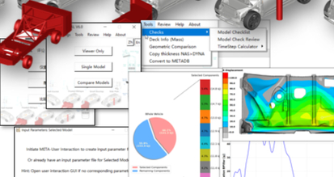
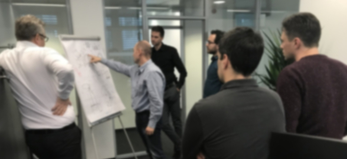
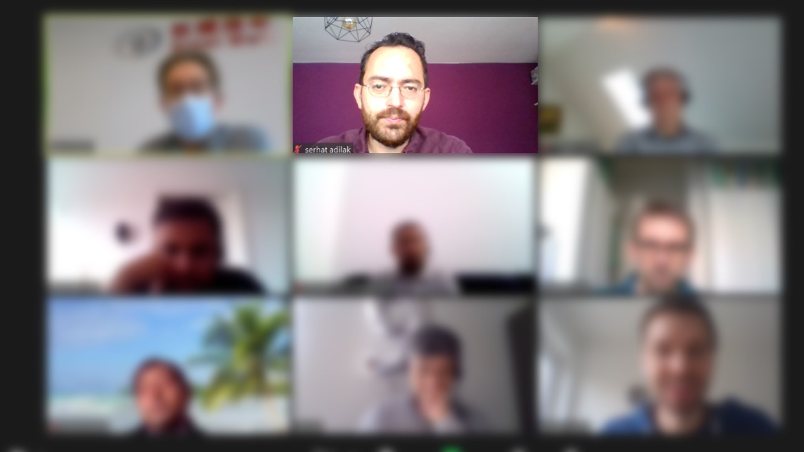
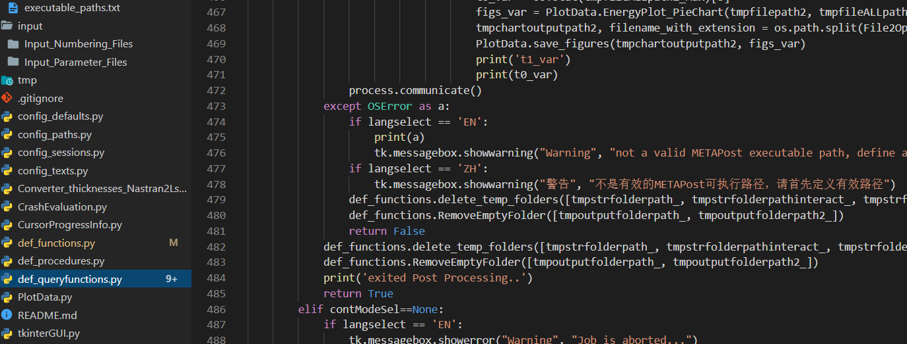
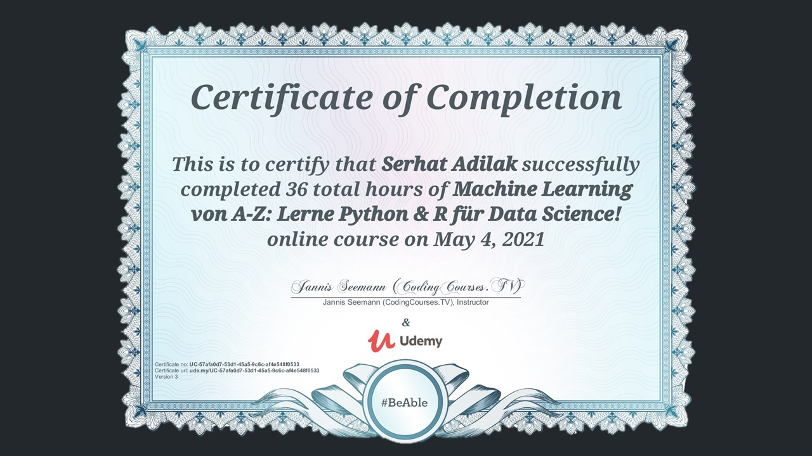
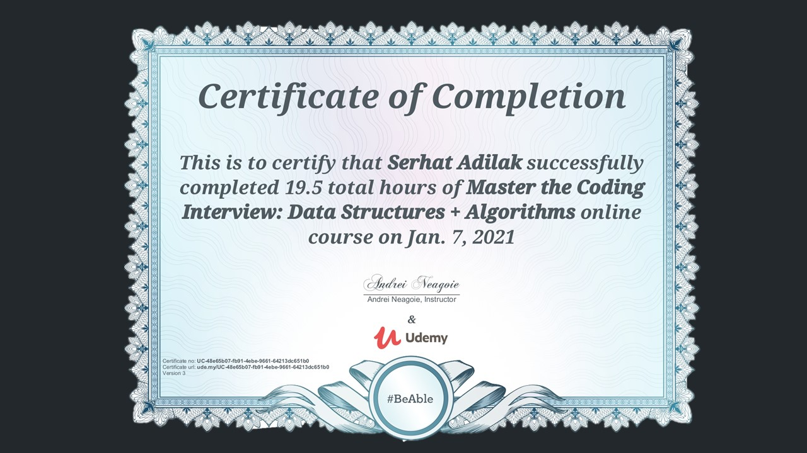
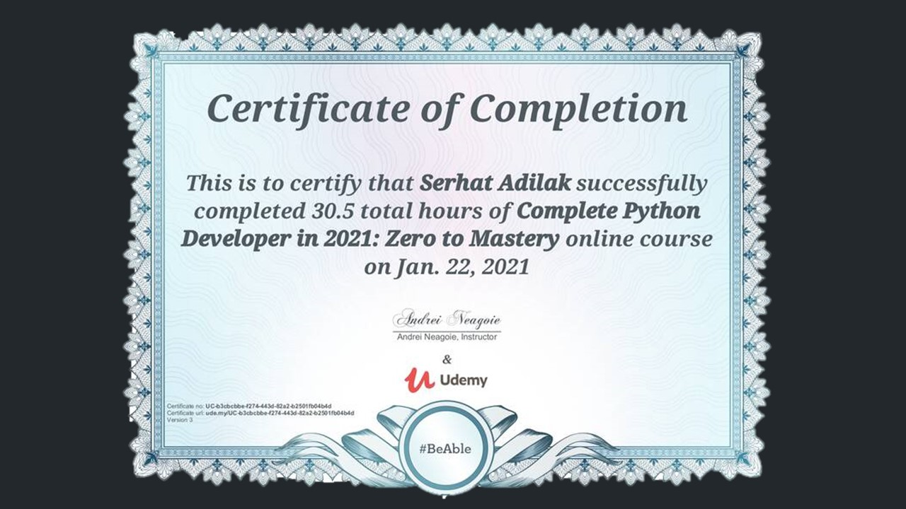
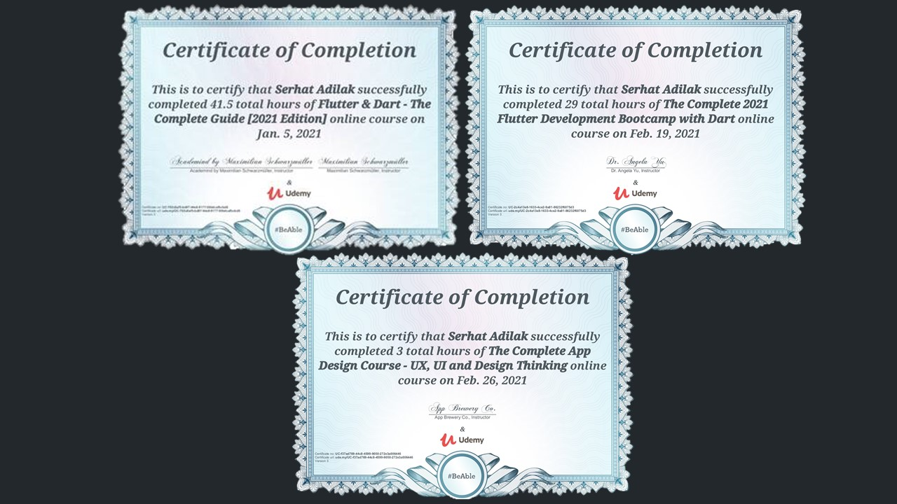

Intro
As a CAE Engineer, I do technical simulations for automotive industry. My current simulation works are focusing on validating passive safety performance of future electric vehicle platforms. More specifically, these validations are to ensure the car design to meet modern safety standards for an approval to be placed on a market.
Probably, if you've asked me ten years ago, as I started my career in automotive industry, I would probably say like this: "I do computer simulations based on finite element methods with static or dynamic analysis of mechanical components in complete vehicle or its special components". Well, it sounds a bit boring compared to the previous one.
Did you also notice that I mentioned the word "electric vehicle" in the second sentence?. Not that I am so bad at forecasting and predicting the future trends, but mainly the work I was doing for the industry was mainly for ICE cars at that time. Then suddenly I found myself doing simulation works for electric vehicle designs, like BMW i3 for example, a very innovative electric car design at that time by the way, and then continued working for new challenges and trends in this field.
History
I started my Bachelor on Mechatronics Engineering at Sabanci University in Istanbul, Turkey. It was an interdisciplinary study, also including social and political science lectures, which provided me intellectual understanding and not only technical knowledge.
During my bachelor study, I managed to have my name on a published scientific paper while I was doing my summer internship project in Nanorobotic Lab, Carnegie Mellon Universiy. You can have a look at this paper here.
Last year on my Bachelor study, I turned my attention on Finite Element Methods. I did a project which was based on FEM simulation of a nano robot scale mechanism. Again you can have a look at this published paper here.
Then I wanted to increase my knowledge on FEM field and found a Master of Science degree program at Technical University of Munich. The name of the program was called "Computational Mechanics" and it was a challenging experience in my student life.
After finishing my Master study then I started to work as CAE Engineer in automotive industry. For further information, you can have a look at my CV here
Mission
What I am doing in detail? Now, technically speaking, as a skilled expert engineer in FEM analysis, I am simulating sophisticated
technical problems, for example, static analysis of high stressed components, modal and frequency analysis of vibrating components, crash simulations, head impact simulations. I am implementing engineering solutions and adapting present knowledge
to a new design concept. Past couple of years, I have been simulating crash scenarios, mostly for an early phase vehicle design.
 Currently, I work in an overseas office of a well reputed car company as an SUV maker in China, Great Wall Motors. In Munich office, I am the structural crash and passive safety simulation expert who is responsible to deliver crash simulation results of an early-stage development phase for an electric vehicle platform among other experts in their fields. Together we deliver CAE validated designs, mainly conceptual chassis, BiW and assembly components.
 We have started a fully functioning office in Munich from zero with a team of experts in each field, setting up IT/network and hardware, negotiating for software licences, etc. Our simulation team defined post/pre-processing guidelines for each field, modelling standards to enable an efficient collaboration with the CAE teams inside the OEM.
Additionally, flat communication in a small team with experts in each field gave me various technical and non-technical experiences. These enabled me to see the car design process from above in such a multidisciplinary environment. My simulations and validations brought the early stage of the electric car platform design into further development
 Programming/Scripting for an efficient evaluation process was one of my crucial achievements in the absence of an automated CAE environment from the beginning. I increased my programming skills while inventing some evaluation tools (optionally) for the benefit of my company and as a free time activity (simulator program, mobile app etc). Why not to extend my computing and programming experience also in the future promising field "self-driving vehicle development" as well?
 I have obtained new professional skills as a result of my personal responsibility through my commitment in a “start-up” atmosphere of this Munich overseas office. After many years of experience in automotive industry and car development processes, I see that I can widen my horizon and expand my knowledge whenever I have option to have a full engagement and responsibility on a process.
Vision
Everything is changing, modifying itself to a new world of technology. Engineers, like other professionals, also need to update themselves. Let's take CAE for example, FEM gained its popularity with computers emerging in the worldwide market. As new challenges appeared, new methodologies also appeared in this field.
FEM is not the only method but most popular one. An alternative to that would be iso-geometric analysis method. Iso-geometric analysis is a meshless method to provide directly mathematical formulations of models from their geometrical representation with NURBS, Splines. As computing technology evolved, even FEM mesh models with small element sizes continued to be used until today. That is why FEM did not lose its popularity so far.
Complexity of models is increasing to have accurate results. On the other hand, this is a challenge for FEM because more data, meaning more data storage and computer power, is required. CAE Future is in the hands of computers. Computers are there to help experts doing pre and post processing. 100% computer decision is only taken in the "solution step", meaning "solvers". Therefore, still many decisions are taken by experts on pre/post processing. So a "human brain" is mainly deciding on an evaluation process, which is somehow not sooo accurate, right?
New considerations are taken now to overcome this challenge: "we need to decrease human decision, hence possible errors while complexity of models increasing. We will hear such words more in the future: "machine learning, deep learning, artificial intelligence, neural networks". Experts and computers have been collaborating so far on evaluation process via scripting, toolboxes and mostly "session files". This very "expert dependent" task is vulnerable. However, computers need sufficient amount of data to decide like an "expert" for an evaluation. This data can be collected wisely, intentionally with the help of machine learning algorithms, to teach the computer to make an accurate decision!
As we have limited amount of time, we must manage our sources efficiently. Therefore, I invested my time on learning such new methods and approaches. I did not sit and wait for the "next task" to accomplish. I started to learn more by myself, developed my computer science knowledge. Programming ability is a "must-have" for CAE engineers, in my opinion, and also for any kind of engineers I guess.
Lets have a look at my recent certificates on my e-learning activities (partially selected ones):




Learning is just a start and it is not completed until an action is taken. Without practical action, you will not learn completely. Action is "learning by doing" and practicing with various self-made projects. For that reason, I started to do different programming projects, as a daily routine, a hobby and an entertaining activity. If a new habit is not considered as a hobby, in other words, if it does not enjoy you, then it is not easy to develop skills for that new habit. My other hobbies: I like playing chess, playing my musical instrument baglama (a kind of turkish guitar), reading books and learning new things.
Last but not least, you can look at my GitHub profile on the main menu icons. You will have more idea on my other projects as well. Whenever a new idea appears in my mind, when this idea is validated and if it is also implemented in a virtual environment, then you will be the one who will hear first if you get in touch with me. Then feel free to contact me!
Contact
{% with messages = get_flashed_messages() %}
{% if messages %}
{% for message in messages %}
- {{ message }}
{% endfor %}
{% endif %}
{% endwith %}
{% block body %}{% endblock %}
Thanks
Thank you for contacting with me;) I will reply your message as soon as possible!